About me

Hi! My name is Arturo Fonseca de Souza. I am a 23 year old IT student at the Universidade Federal do Rio Grande do Norte (Brazil). For the last 2 years I have been working with web development in scholarships, furthering my knowledge in the backend side as well as the frontend.
I really like learning new things and making them more accessible to people. This was my main motivation behind one of my dearest personal projects: a website where anyone can visualize and understand how pointers work in programming languages. It is still in the early stages of development, but I am determined to finish it this year.
Outside developing web applications, I have a big passion for geometry and mathematics in general. This led me down a path of studies where I discovered the wonders of computer graphics. After finally taking a course in the subject at my university, I was sure that this was something I wanted to pursue more deeply.
My other interests include folding origami, taking pictures, messing around a bit with electronics and watching videos about music theory.
Projects
Visual Math
Triangle lerp
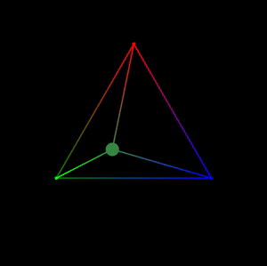Linear interpolation but with areas! In a triangle!
Perlin noise - vector field
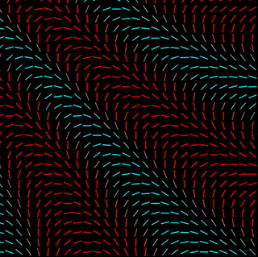The beauty of a particular random number generator.
Julia sets
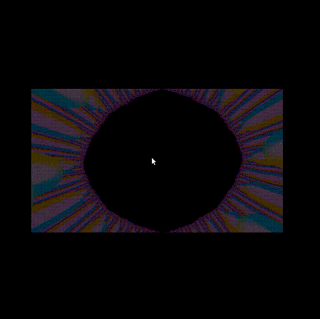Move your mouse to generate beautiful products of a complex number function.
Times table
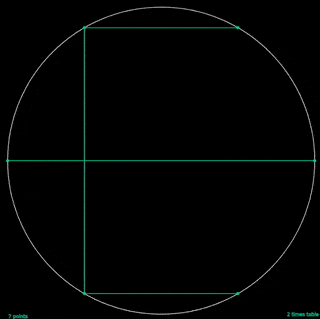Wonderful patterns emerge when numbers are written in a circle.
Light and shadow
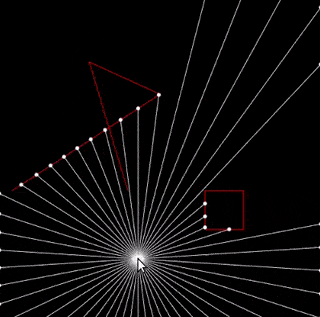Lines and their interceptions.
Websites
How Pointers Work
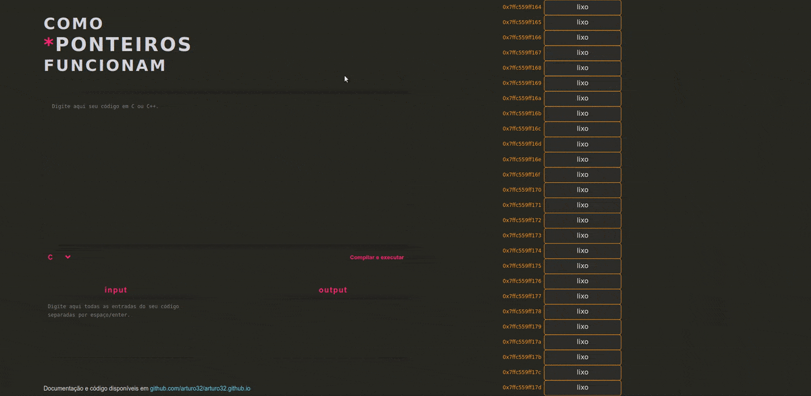Personal educational project about the magic of pointers and what are they like in memory.
Ecoleta (React)
A site about recycling collections points in your city.
Converter (Vue.js)
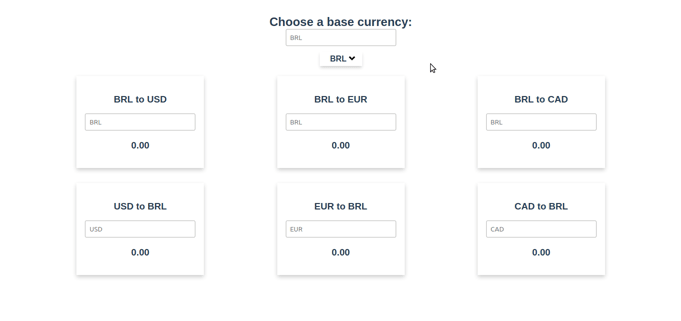Convert monetary values between numerous international currencies!
(Re)learning Vue.js
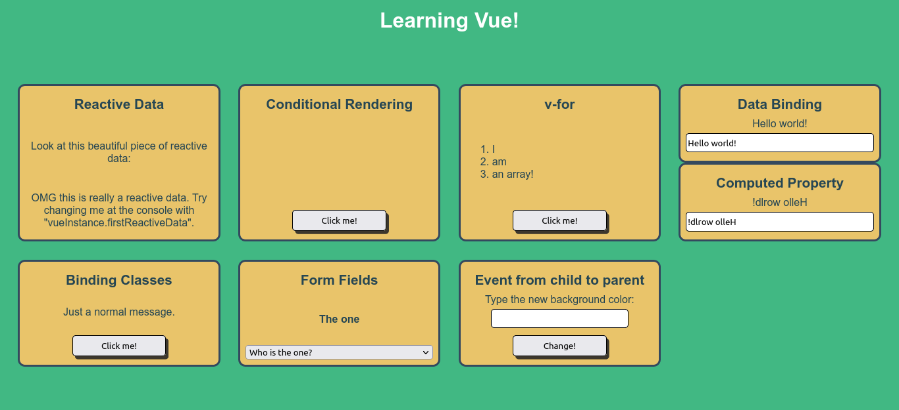Back to basics.
Others
Ray Tracer
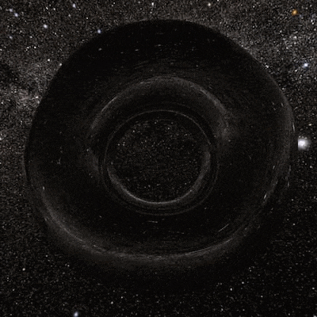3D ray tracer that can create photorealistic images.
Drawing Project
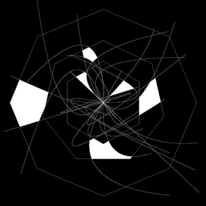Almost like Microsoft Paint! But with a keyboard instead of a mouse.
Som Imaginário
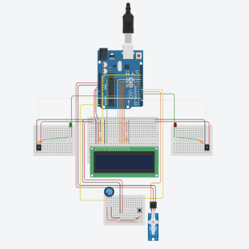Educational project about sound and how humans perceive its origin in space.
Others
Origami
Without scissors or glue, intriguing forms can emerge from a flat sheet of paper. I discovered the art of origami when I was 11 years old. Since then, I've learned that I can fold literally everything I can imagine - as in painting, it doesn't have to be realistic - just from creativity, technique and a bit of suggestion. Below are some of my favorite designs that I have had the opportunity to fold:


Photography